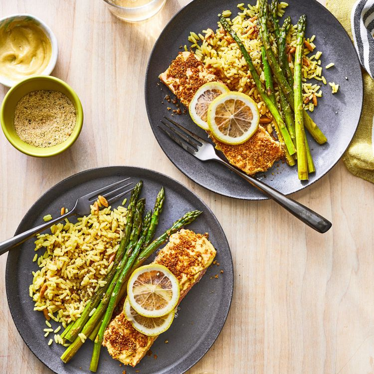

5 Ingredient Dijon Salmon

Dijon Salmon finished
Learn how long to bake salmon at 400 degrees F with this easy recipe for delicious salmon fillets coated with Dijon-style mustard and seasoned bread crumbs drizzled with butter.
Ingredients
- 4 (4 oz) fillets of salmon
- 3 tbsp dijon mustard
- salt and black pepper to taste
- 1/4 cup italian-style dry bread crumbs
- 1/4 cup of melted butter
Steps
- Preheat oven to 400 degrees fareinheit
- Place salmon fillets skin-side down on the prepared baking pan. Spread a thin layer of mustard on top of each fillet; season with salt and pepper. Top with bread crumbs, then drizzle with melted butter.
- Bake in the preheated oven until salmon flakes easily with a fork, about 15 minutes
- Serve and enjoy!
Go home